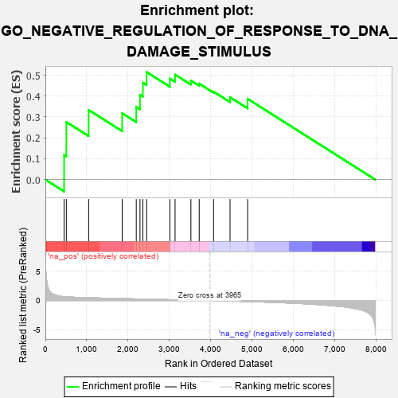
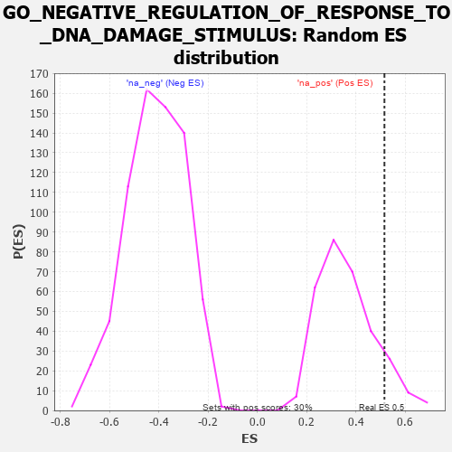

| | | Dataset | 7d |
| Phenotype | NoPhenotypeAvailable |
| Upregulated in class | na_pos |
| GeneSet | GO_NEGATIVE_REGULATION_OF_RESPONSE_TO_DNA_DAMAGE_STIMULUS |
| Enrichment Score (ES) | 0.515674 |
| Normalized Enrichment Score (NES) | 1.4263573 |
| Nominal p-value | 0.108552635 |
| FDR q-value | 0.3248147 |
| FWER p-Value | 1.0 |
Table: GSEA Results Summary

Fig 1: Enrichment plot: GO_NEGATIVE_REGULATION_OF_RESPONSE_TO_DNA_DAMAGE_STIMULUS
Profile of the Running ES Score & Positions of GeneSet Members on the Rank Ordered List
| PROBE | GENE SYMBOL | GENE_TITLE | RANK IN GENE LIST | RANK METRIC SCORE | RUNNING ES | CORE ENRICHMENT | | 1 | ERCC1 | | | 453 | 0.660 | 0.1173 | Yes |
| 2 | THOC1 | | | 507 | 0.627 | 0.2761 | Yes |
| 3 | TAF9 | | | 1046 | 0.475 | 0.3338 | Yes |
| 4 | OTUB1 | | | 1857 | 0.326 | 0.3180 | Yes |
| 5 | ATAD5 | | | 2197 | 0.277 | 0.3485 | Yes |
| 6 | XRCC1 | | | 2287 | 0.262 | 0.4065 | Yes |
| 7 | MIF | | | 2357 | 0.252 | 0.4644 | Yes |
| 8 | KDM1A | | | 2447 | 0.237 | 0.5157 | Yes |
| 9 | RTEL1 | | | 3010 | 0.148 | 0.4842 | No |
| 10 | OGG1 | | | 3135 | 0.132 | 0.5035 | No |
| 11 | UBR5 | | | 3518 | 0.074 | 0.4751 | No |
| 12 | HSF1 | | | 3718 | 0.039 | 0.4603 | No |
| 13 | SFRP2 | | | 4065 | -0.018 | 0.4216 | No |
| 14 | ERCC6 | | | 4464 | -0.087 | 0.3946 | No |
| 15 | CLU | | | 4889 | -0.174 | 0.3873 | No |
Table: GSEA details [plain text format]

Fig 2: GO_NEGATIVE_REGULATION_OF_RESPONSE_TO_DNA_DAMAGE_STIMULUS: Random ES distribution
Gene set null distribution of ES for GO_NEGATIVE_REGULATION_OF_RESPONSE_TO_DNA_DAMAGE_STIMULUS